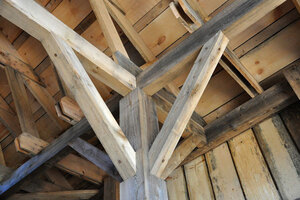

ⲥⲁ A v ⲥⲟⲓ.
(noun male/female)
tool, construction
beam of wood [δοκος, στελεχος]

complete
| ⲟⲩⲉϩⲥ. SSfF
ⲟⲩⲁϩⲥ. AB |
(noun female)addition of beams, roof [στεγη, δοκωσις]1692 | Crum: 318a | |||||||
316a
317b
511a
ⲥⲁⲓ v ⲥⲟⲓ.
317b
ⲥⲟⲓ SB, ⲥⲁ A, ⲥⲁⲓ Sf, -ⲉⲓ F nn m f, beam of wood: 4 Kg 6 5 S, EpJer 18 B (F ⲥ. ⲛⲟⲩⲟϩ), Mt 7 3 SB δοκός; Nu 33 9 S (var & B ⲕⲁϥ) στέλεχος; TurO 7 S ⲉⲓⲥ ⲡⲥ.…ⲙⲡⲉⲓϭⲛ ⲕⲁⲙⲟⲩⲗ ⲛⲧⲁⲧⲁⲗⲟϥ, J 106 113 S house ⲙⲛⲛⲉϥⲥ., ib 67 80 S suffered thee not ⲉⲟⲩⲉϩ ⲥ. ⲉⲣⲟⲥ (sc wall), BM 479 S ⲕⲟⲟϩ ⲉⲥ., PLond 4 499 S ⲡⲁϩⲉ ⲛⲥ., Ryl 338 S rent (πάκτον) of ⲥ., CO 116 S ϩⲉⲛⲥ. ⲱ, BMOr 6201 A 90 S in account ⲥ., ib ⲥ. ⲛⲥⲓϣⲉ (quid ?); f S (cf ⲟⲩⲉϩⲥⲟⲓ) ST 324…ⲙⲙⲉⲣⲟⲥ ϩⲛⲧⲥ. ⲉⲧⲉⲛⲁⲙⲁϩⲧⲉ ⲉⲣⲟⲥ, Bodl(P) d 30 (about building ⲙⲁ ⲛϣⲱⲡⲉ) ⲧⲥ. ⲉⲥⲟⲩⲟϫⲡ, BMEA 10136 ϩⲁⲧⲥ. ⲥⲛⲧⲉ.
ⲟⲩⲉϩⲥ. SSfF, ⲟⲩⲁϩⲥ. AB nn f, addition of beams, roof (cf above ⲥ. ⲛⲟⲩⲟϩ): Ge 19 8 SB, Is 38 7 B (S ⲏⲓ), Mt 8 8 SB, Cl 12 6 A ⲟⲩⲁϩⲥⲁ, Z 345 S στέγη, -ος; Eccl 10 18 F δόκωσις; CaiEuch 481 B, Va 63 96 B ⲛⲧⲉϥⲥⲟⲗⲥⲉⲗ ⲛϯⲟⲩ. ὄροφος; Cant 1 17 S φάντωμα; Tri 403 S سقف, P 44 60 S ⲛⲟⲩ. of church ﺳ׳; P 1311 35 Sf pillars ϥⲓ ϩⲁⲧⲟⲩⲉϩⲥⲁⲓ, Z 350 S ⲛⲉⲥⲟⲩ. roof-beams, Va 66 297 B houses whose ⲃⲁϩⲥⲟⲓ ⲗⲁⲗⲏⲟⲩⲧ with gold, BMis 106 S = Mor 33 68 Sf.
511a
ⲟⲩⲉϩⲥⲟⲓ v ⲥⲟⲓ beam.
See also:
Homonyms:
| view | ϩⲁ, ϩⲟ, ϩⲁⲉ S | (noun male) pole, mast, weaver's beam [αντιον]2096 |
| view | ⲗⲟϭⲗⲉϭ S ⲗⲁϭⲗϭ A ⲗⲁϫⲗⲉϫ B | (noun male/female) nn m f (?), girder, joint, frame [ιμαντωσις]1028 |
| view | ⲟⲩⲟⲉⲓⲧ S | (noun male) pillar [στηλη]1746 |
| view | ϫⲱⲧ B | (noun female) pillar2462 |
Homonyms:
| view | ⲥⲟⲓ B | (noun male) among trees, between ⲁⲙⲓⲥⲓ & ⲣⲁⲙⲛⲟⲥ3051 |
| view | ⲥⲟⲓ SB ⲥⲁⲓ SF | (noun male) back of man or beast [ραχις, οπισθιος]1368 |
| view | ⲥⲱⲓ B | (verb) intr: become hairless (?)1371 |